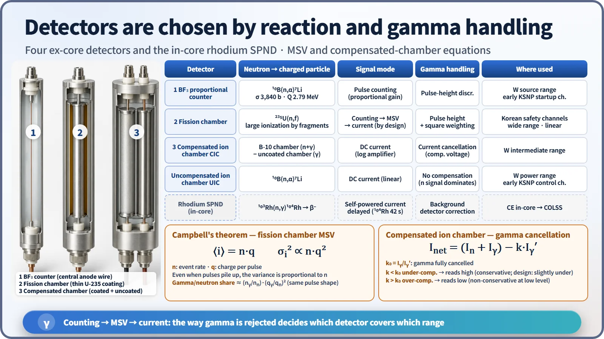
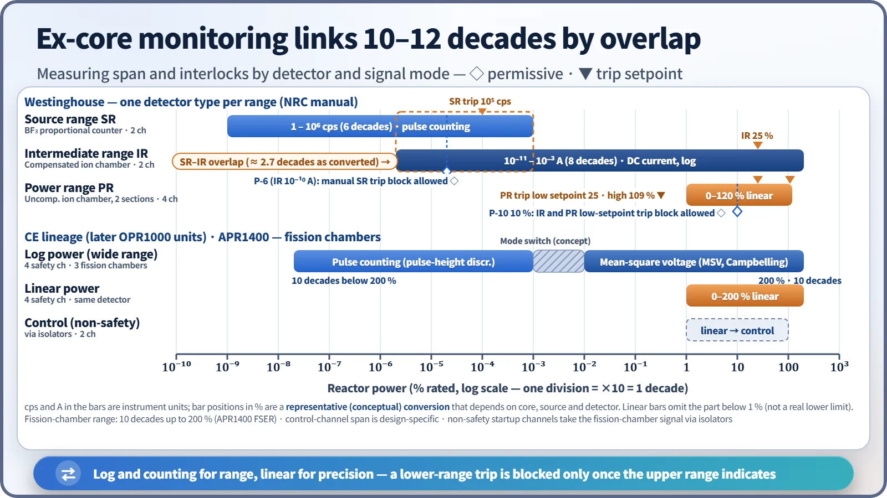
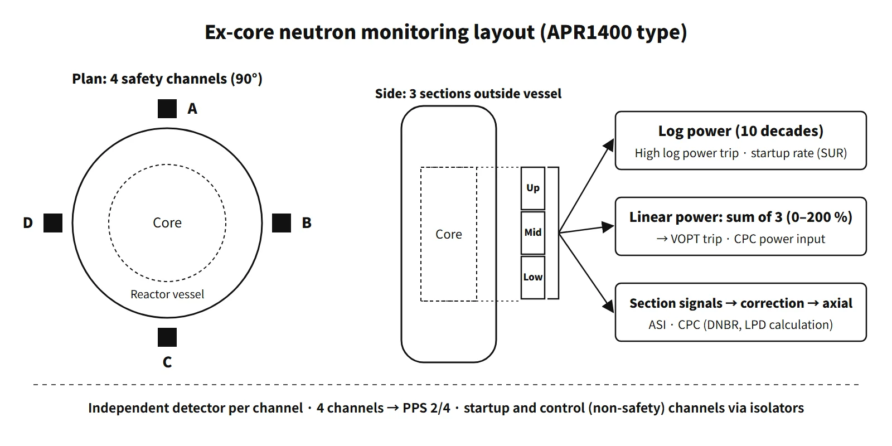

Systems & Equipment · C-SY-010
Ex-core Neutron Flux Monitoring System (ENFMS) and Neutron Detectors — Covering 10 Decades with Overlapping Ranges for Power Monitoring and Protection Signals
Detector principles, overlapping measuring ranges and the protection signals they feed, from Westinghouse three-range systems to CE-type fission-chamber designs.
The ex-core neutron flux monitoring system (ENFMS; called the excore nuclear instrumentation system, NIS, in Westinghouse plants) measures neutrons leaking from the core with neutron detectors placed in instrument wells outside the reactor vessel; it continuously provides power level, startup rate and axial distribution over roughly 10–12 decades, from source level at shutdown up to about 200 % of rated power, and uses these signals to drive the reactor protection system, the core protection calculators and the control systems (built around four safety channels used for protection).
No single detector or signal-processing method can cover this range. The range is therefore divided into regions that overlap, and a lower region's trip is blocked only after the next region has been confirmed to be indicating.
Principle and mechanism
Reactions that turn neutrons into charged particles
Neutrons carry no charge, so they can be counted only after they cause a reaction in the detector that produces charged particles.
- BF₃ proportional counter: ¹⁰B(n,α)⁷Li (σth 3,840 b, Q 2.79 MeV). Gas multiplication in the proportional region makes neutron pulses large, so gamma pulses are rejected by pulse-height discrimination. Its high sensitivity suits the source range. ³He(n,p) counters (5,330 b) work on the same principle.
- Fission chamber: an ionization chamber coated with highly enriched U-235. Fission fragments produce very large ionization, so gamma discrimination is the easiest of all. At low levels the pulses are counted; when pulses pile up the signal is carried on by Campbelling (mean-square voltage, MSV), and at still higher levels by DC current, so that one detector covers a wide range.
- Compensated ion chamber (CIC): the currents from a B-10-coated chamber (neutron + gamma) and an uncoated chamber (gamma) are subtracted to cancel the gamma signal. Used for the Westinghouse intermediate range.
- Uncompensated ion chamber (UIC): in the power range the neutron current is much larger than the gamma current, and the gamma signal is itself proportional to power, so compensation is unnecessary.
By Campbell's theorem, for a pulse train with event rate n, the mean current is proportional to n·q and the mean square of the fluctuation (the variance) to n·q². Even when pulses can no longer be counted, the MSV is proportional to the event rate, and because it is weighted by the square of the charge, the gamma-to-neutron contribution ratio is suppressed to (nγ/nn)·(qγ/qn)² (assuming the same pulse shape).

Ranges and overlap
Westinghouse design (values from the NRC Westinghouse training manual)
| Range | Detector | Span | Main interlocks |
|---|---|---|---|
| Source range (SR), 2 channels | BF₃ | 10⁰–10⁶ cps | Trip 10⁵ cps; SUR −0.5 to +5 dpm |
| Intermediate range (IR), 2 channels | CIC | 10⁻¹¹–10⁻³ A (8 decades) | P-6 at 10⁻¹⁰ A; rod-withdrawal stop at 20 %, trip at 25 % equivalent |
| Power range (PR), 4 channels | UIC, upper and lower sections | 0–120 % linear | Upper–lower signal difference ΔI (AFD) |
Taking the bars as a whole, the top of the SR and the bottom of the IR overlap by more than 2 decades. P-6 is generated when the IR reaches 10⁻¹⁰ A, confirming at least 1 decade of overlap with the SR. After P-6 the operator manually blocks the SR trip and de-energizes the SR high voltage; if the block is not applied, the SR trips about 3/5 of a decade higher. When power is reduced, the lower-range trips are reinstated automatically. The startup rate is calculated separately in the SR and IR channels.
Later CE-lineage designs: the four safety channels provide both wide-range logarithmic power and linear power. Older CE designs used separate detectors for the wide range (B-10 counter + fission chamber) and for the linear range (uncompensated ion chambers, upper and lower). From the later OPR1000 units onward, a single detector consisting of three identical fission chambers stacked vertically along the core height handles all three ranges over about 10 decades up to 200 % (the span the NRC FSER gives for the APR1400 ENFMS). The signal-processing drawer consists of a logarithmic amplifier (counting + MSV), a linear amplifier and a rate-of-change circuit. Two non-safety startup channels (logarithmic) and two control channels (linear) receive the safety-channel preamplifier signals through qualified isolators. Earlier OPR1000 units used separate detectors: fission chambers for the safety channels, BF₃ for the startup channels and uncompensated ion chambers for the control channels.

Linear power and logarithmic power
- Logarithmic power: shows 10 decades on a logarithmic scale. It is used for shutdown, startup and low-power monitoring; for the high logarithmic power trip (protection against an unplanned criticality from boron dilution or CEA withdrawal during shutdown; operating bypass at power); and for the startup rate (SUR) obtained by differentiating the log signal. SUR (dpm) = 26.06/T (s). The older CE training design had a 2.6 dpm high startup-rate trip and a 1.5 dpm CWP between 10⁻⁴ and 15 %.
- Linear power: shows 0–200 % on a linear scale and is calibrated against a secondary-side heat balance. The sum of the three sections gives power; the ASI is obtained from the axial distribution reconstructed from the three corrected section signals; and the signal feeds the variable overpower trip (VOPT) and the CPC DNBR and LPD calculations.
- Logarithmic power covers a wide range but has poor precision at high power; linear power is precise but spans only a little over 2 decades. Both are needed.
Gamma compensation: overcompensation and undercompensation
The CIC net current is Inet = (In + Iγ) − k·Iγ′. The compensating voltage sets k. If k is smaller than the value that cancels gamma exactly, k₀ = Iγ/Iγ′, the chamber is undercompensated; if larger, overcompensated.
- Undercompensated: some gamma remains, so the indication is higher than the true value. The high-flux trip and rod-withdrawal stop act earlier, which is conservative, so "slightly undercompensated" is the design basis. On the other hand, fission-product gamma after shutdown makes the IR indication fall slowly, delaying the reset of P-6 and the return of the SR. During startup P-6 is reached earlier than it should be, reducing the real SR–IR overlap, and the gamma background makes the low-level startup rate look smaller.
- Overcompensated: the indication is lower than the true value. The SR returns quickly after shutdown, but during startup the IR comes on scale and P-6 is reached later, and the IR trip and rod-withdrawal stop become non-conservative. The low-level indication is also unstable.
- Both effects are large at low power and just after shutdown, and negligible in the power range.
What it means in a plant
- Protection: in the APR1400 ENFMS, four safety channels monitor from near startup to 200 % (10 decades), sending the VOPT and high logarithmic power trips to the PPS and power plus the three-section axial distribution to the CPCS (NRC APR1400 FSER Chapter 7). In the CPC, the three-section signals pass through the shape annealing matrix and shadowing correction to become the core axial distribution.
- Startup: during the approach to criticality, the startup-channel count rate is used to plot inverse multiplication (1/M), together with the audible count rate. For the first startup after refueling, securing an adequate count rate is the key. The single fission-chamber design is less sensitive than BF₃, so securing an adequate startup-range count rate for an initial core is a known design issue.
- Calibration: linear power is periodically adjusted to the secondary-side heat balance, and the axial distribution to in-core measurements. If the position of an instrument well changes, the detector–core geometry changes and the indication shifts.
- Digitalization: even within the APR1400 MMIS, ENFMS signal processing remains analog. Research on digitalization to address obsolescence is under way (NET Vol. 53 No. 7, 2021).
Ex-core versus fixed in-core detectors
The CE-type fixed in-core instrumentation (ICI) places rhodium self-powered neutron detectors (SPNDs), five levels each, in 61 assemblies in the APR1400. It uses the current from the β decay of ¹⁰³Rh(n,γ)¹⁰⁴Rh (T½ 42 s), so the response is delayed and needs dynamic compensation, and the rhodium is consumed so that sensitivity falls. It is therefore used not for protection but for COLSS monitoring of the 3D power distribution, ASI and margins, and for calibrating the ex-core detectors. Westinghouse plants measure the power distribution periodically with small movable fission chambers.
Regulatory and design criteria
The criteria below are examples from the United States (US NRC) and IEEE standards.
| Basis | Key point |
|---|---|
| 10 CFR 50 Appendix A, GDC 13 and 20–24 | Instrumentation over the full operating range; protection system functions, independence and separation from control systems |
| 10 CFR 50.55a(h) | IEEE 603-1991 (safety system channel requirements) |
| RG 1.97 | Neutron flux as a post-accident monitoring variable (Rev. 3: Category 1, 10⁻⁶–100 %); the current Rev. 5 is performance-based |
| Technical specifications (CE STS family) | LCO for RPS instrumentation (linear and logarithmic power channels); startup-range monitoring during shutdown |
Easily confused pairs
| Ex-core (ENFMS) | Fixed in-core (ICI) | |
|---|---|---|
| Location | Instrument wells outside the vessel, 4 azimuths | Instrument tubes of fuel assemblies |
| Detector | Fission chamber, ion chamber, BF₃ | Rhodium SPND |
| Response | Prompt | Delayed (¹⁰⁴Rh half-life about 42 s, dynamic compensation) |
| Measures | Leakage neutrons from the periphery | Local 3D distribution |
| Function | Trips, CPC, control, startup monitoring | COLSS monitoring, ex-core calibration |
| Class | Safety (4 channels) | Non-safety |
| Westinghouse | CE-type | |
|---|---|---|
| Ranges | Separate SR, IR and PR detectors | Safety channels serve both wide range and linear |
| Power distribution | PR upper and lower sections → ΔI | 3 sections → CPC axial distribution and ASI |
| Startup rate | SR and IR | Wide-range log channel |
Key points at a glance
- Definition: neutron detectors outside the vessel measure leakage neutrons and provide power, SUR and axial distribution from source level to 200 % (10–12 decades) → protection, control and monitoring.
- Overlapping ranges: Westinghouse SR (BF₃), IR (CIC), PR (two-section UIC); 1 decade of SR–IR overlap → P-6; P-10.
- Later CE-lineage design (later OPR1000 units): four safety channels, three fission chambers stacked vertically (fission-chamber-based wide-range monitoring), about 10 decades up to 200 %.
- Signal modes: counting (pulse-height discrimination) → MSV (Campbelling) → DC current (depending on design).
- Logarithmic power: high logarithmic power trip (unplanned criticality); SUR = d(log₁₀P)/dt (t in minutes, dpm).
- Linear power: 0–200 %, heat-balance calibration; sum of three sections → power; correction and reconstruction of the three sections → axial distribution and ASI → VOPT and CPC (DNBR, LPD).
- Gamma compensation: undercompensation → indication high (conservative, delayed SR return after shutdown); overcompensation → indication low (non-conservative).
- Non-safety channels: startup (log, audible count rate), control (linear), separated by isolators.
- Versus in-core: Rh SPND, ¹⁰⁴Rh half-life 42 s → delayed response; COLSS monitoring and ex-core calibration.
- Basis: for example, GDC 13 and 20–24; IEEE 603; RG 1.97.
